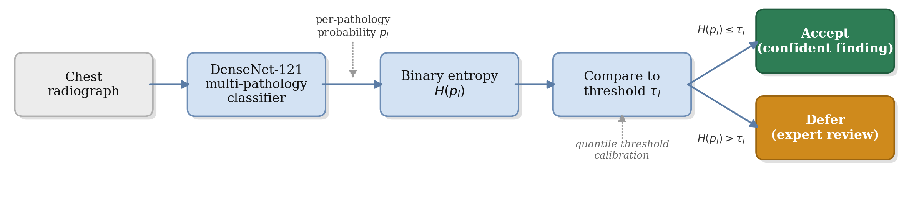
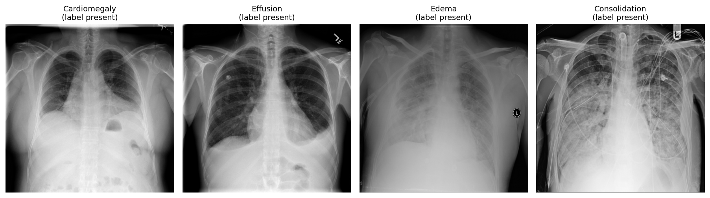
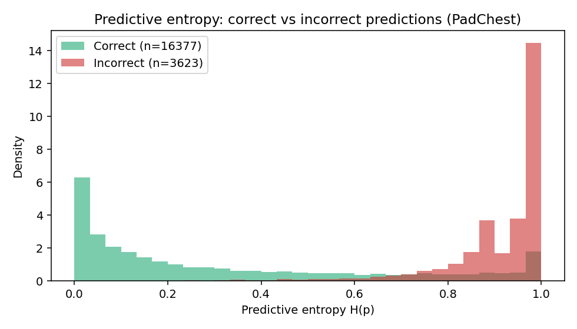
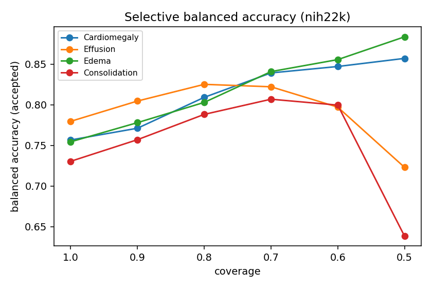
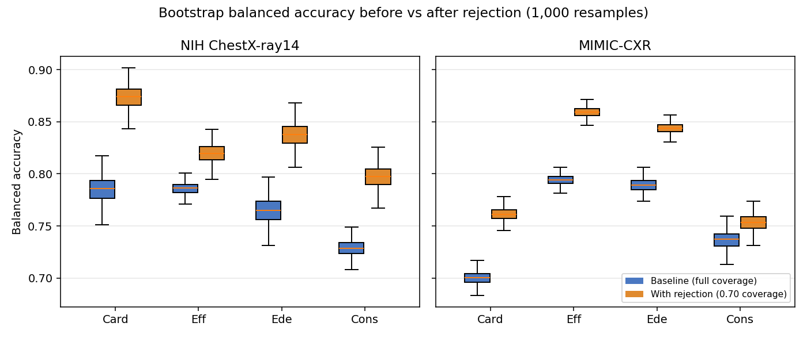
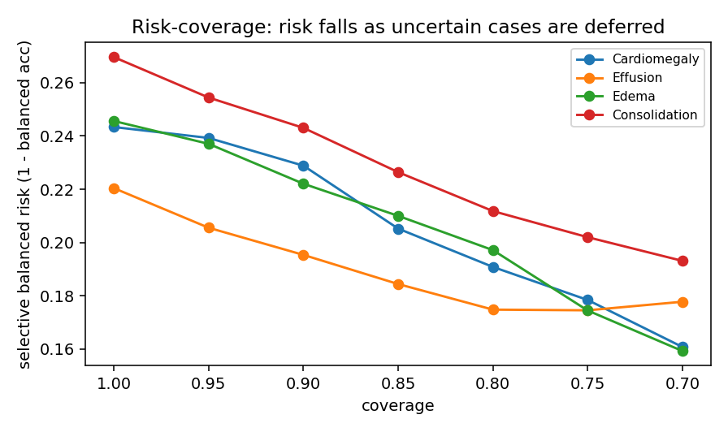
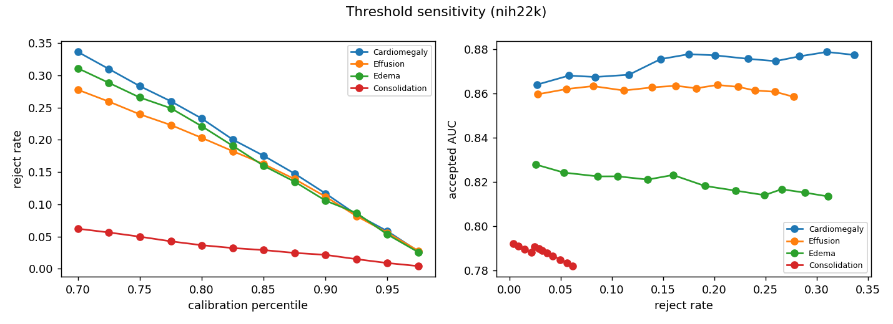
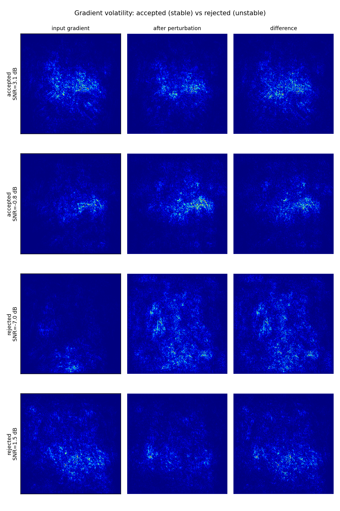
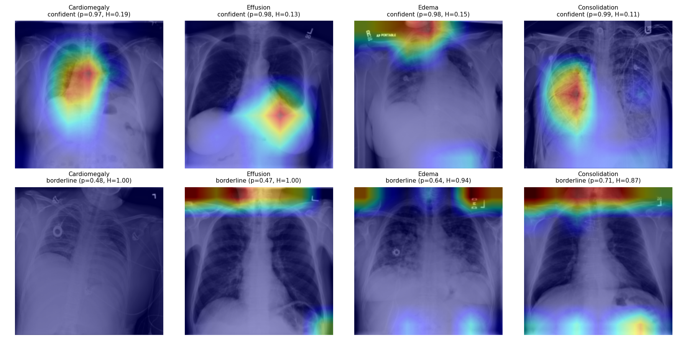

1 Intelligent Systems, Afeka Academic College of Engineering, Tel Aviv 69988, Israel
2 School of Computer Science, Faculty of Sciences, HIT-Holon Institute of Technology, Holon 58102, Israel
* Corresponding Author: apersteiny@afeka.ac.il
Overconfidence in deep learning models poses a significant risk in high-stakes medical imaging tasks, particularly in multi-label classification of chest X-rays, where multiple co-occurring pathologies must be detected simultaneously. This study introduces an uncertainty-aware framework for chest X-ray diagnosis based on a DenseNet-121 backbone, enhanced with an entropy-based selective prediction mechanism that abstains, on a per-pathology basis, from predictions whose binary entropy exceeds a calibrated threshold, deferring those findings to clinical experts. A quantile-based calibration procedure tunes rejection thresholds using either global or class-specific strategies. On NIH ChestX-ray14, MIMIC-CXR, and PadChest, selective prediction is evaluated with risk-coverage analysis and balanced accuracy under non-parametric bootstrap confidence intervals. At a calibrated operating point, abstention improves balanced accuracy for all four target pathologies, with gains of 0.04 to 0.09 at a coverage of 0.70 on NIH ChestX-ray14 (95% confidence intervals excluding zero), and the improvement replicates on MIMIC-CXR, on the geographically independent PadChest cohort, and on an independently trained model. A leave-one-dataset-out evaluation shows that, although domain shift lowers discrimination, deferral improves retained balanced accuracy on the unseen source in both transfer directions and on PadChest, a geographically distinct cohort never seen during training. These results support the integration of selective prediction into AI-assisted diagnostic workflows, providing a practical step toward safer, uncertainty-aware deployment of deep learning in clinical settings.
Keywords: Chest X-ray classification; Rejection mechanism; Multi-label diagnosis; Selective prediction; Uncertainty estimation; Risk-coverage analysis; Balanced accuracy; Domain shift
Automating medical diagnosis with deep learning has shown great potential, particularly in medical imaging domains such as chest X-ray analysis. Convolutional neural networks, including architectures like DenseNet-121, have demonstrated strong performance in detecting a range of thoracic pathologies [1],[2]. However, successfully integrating such models into clinical workflows requires more than high classification accuracy. It demands robust mechanisms for managing uncertainty and ensuring patient safety.

One of the most critical risks in this domain is the occurrence of false negatives, where existing pathologies go undetected. Such failures can delay treatment and lead to serious consequences for patient outcomes. The problem is compounded by the nature of medical imaging, where visual data alone may not be sufficient for a definitive diagnosis. Identifying a condition may require image-based interpretation, contextual clinical information, laboratory results, or expert judgment. These challenges are amplified in multi-label classification settings, where multiple overlapping or subtle findings must be simultaneously considered.
In high-stakes medical imaging, a model that always produces a prediction, even when uncertain, can pose significant risks. Rejection mechanisms provide a safeguard by allowing the model to abstain on ambiguous cases, deferring them to expert review. This capability is especially critical in multi-pathology chest X-ray classification, where subtle or overlapping findings can lead to overconfident errors. Integrating rejection directly into the diagnostic workflow therefore enhances reliability and patient safety beyond what conventional classifiers can provide.
To address these concerns, we propose a chest X-ray classification framework built on a DenseNet-121 backbone and augmented with an entropy-based rejection mechanism that measures per-pathology uncertainty using binary entropy and abstains, independently for each pathology, when that uncertainty exceeds a calibrated threshold. Each pathology prediction is accepted or deferred on its own; acceptance yields a partial-label output and is not a global clearance of the image. This allows the model to selectively defer uncertain findings to human experts, reducing the risk of overconfident misclassifications.
Crucially, we implement a calibration procedure using a held-out portion of the training data to tune rejection thresholds. We explore two strategies: shared thresholds, which apply uniformly across all pathology classes, and class-specific thresholds, which are independently optimized per class to account for differences in prevalence and model confidence. This calibration-driven approach enables flexible and interpretable control over the trade-off between diagnostic performance and rejection coverage.
This study makes the following contributions to AI-assisted medical imaging: (1) an uncertainty-aware framework that integrates a DenseNet-121 backbone with a per-pathology entropy-based rejection mechanism for multi-pathology diagnosis; (2) a quantile-based calibration procedure that supports both global and class-specific thresholds, enabling fine-grained control over the trade-off between diagnostic performance and rejection coverage; (3) an evaluation based on risk-coverage analysis and balanced accuracy with bootstrap confidence intervals, together with a formal leave-one-dataset-out assessment of selective behaviour under domain shift across NIH ChestX-ray14, MIMIC-CXR, and the geographically independent PadChest cohort.
The remainder of this paper is organized as follows. Section 2 reviews related work on deep learning for chest X-ray diagnosis and selective classification. Section 3 describes the proposed methodology, including dataset construction, model design, and the rejection mechanism. Section 4 presents experimental results. Section 5 discusses the findings and their implications, and Section 6 concludes.
Recent advances in deep learning have significantly improved automated chest X-ray interpretation, particularly in multi-label pathology classification. Deploying such models in clinical settings requires more than high predictive accuracy: it also demands robustness to uncertainty, transparency in decision-making, and mechanisms for risk-aware abstention. This section reviews three areas central to our work: deep learning for chest X-ray diagnosis, rejection mechanisms in machine learning, and selective prediction and uncertainty modeling in medical imaging.
Deep convolutional neural networks have become the method of choice for medical image analysis. Large public datasets and deep CNNs enable expert-level disease classification in chest radiography. Wang et al. [3] introduced the ChestX-ray8 dataset (approximately 112,000 frontal radiographs, 14 labels) and demonstrated multi-label classification and localization of common thoracic diseases. Rajpurkar et al. [4] trained a 121-layer DenseNet (CheXNet) on ChestX-ray14 and reported radiologist-level pneumonia detection. The CheXpert dataset [5] includes 224,316 chest radiographs with uncertainty labels and has been used to show that CNN models can reach radiologist-level performance on several pathologies. Lakhani and Sundaram [6] classified tuberculosis with an AUC near 0.99; Majkowska et al. [7] matched radiologist performance on five findings; and Park et al. [8] applied a self-evolving vision transformer with knowledge distillation. Cohen et al. [9] study balanced batch sampling across multiple chest X-ray datasets to improve out-of-distribution generalization for Cardiomegaly, Consolidation, Edema, and Effusion, using a DenseNet-121 with a leave-one-dataset-out strategy across ChestX-ray8 [10], CheXpert [5], MIMIC-CXR [11], and PadChest [12]; we adopt this backbone and augment it with a rejection mechanism. Cross-domain generalization in this setting is known to be fragile: Zech et al. [32] show that models can exploit hospital-specific confounders and degrade across acquisition sites, and Cohen et al. [9] attribute much of the cross-dataset gap to label shift. Ovadia et al. [33] further show that predictive uncertainty degrades under dataset shift, motivating an explicit out-of-distribution evaluation of selective behaviour.
The behavior of predictive models under uncertainty has been widely studied, with stability recognized as a key factor in the reliability of estimators. Prior work in statistical signal processing [13] and machine learning [14] shows that increased uncertainty leads to greater sensitivity to small perturbations, often indicating operation near a decision boundary. Such instability motivates analyzing perturbation responses as a diagnostic tool [15] and is frequently leveraged in active learning [16],[17], where uncertain samples are prioritized for annotation. Selective classification, the reject option, allows a model to abstain on uncertain inputs to reduce errors. Chow [18] formalized the error-reject trade-off, and Cortes et al. [19] developed frameworks for learning with a reject option. For deep networks, Geifman and El-Yaniv [20] introduced a risk-coverage framework that thresholds the maximal softmax response to guarantee a user-specified error rate, and proposed SelectiveNet [21], which optimizes the accuracy-coverage trade-off during training. Lakshminarayanan et al. [22] showed that deep ensembles provide high-quality uncertainty estimates. Fisch et al. [23] train a selector for calibrated selective classification; Cattelan and Silva [24] propose a logit normalization that improves confidence-based rejection; and Rabanser et al. [25] reject inputs whose predictions flip during training. The risk-coverage curve and its area introduced in this line of work [20] provide the threshold-free evaluation we adopt in Section 4.
Uncertainty-aware models can improve diagnostic safety by flagging ambiguous cases. Kompa et al. [26] emphasize that machine learning systems in healthcare should be able to say "I do not know" for high-uncertainty cases, and survey abstention methods. Faghani et al. [27] outline emerging trends in uncertainty quantification for medical imaging, noting that an uncertainty measure allows experts to re-evaluate doubtful cases. In chest radiography specifically, Whata et al. [28] developed a Bayesian CNN that quantifies predictive uncertainty for multi-class classification, and Das et al. [29] proposed a semi-supervised lesion-detection framework using confidence-guided pseudo-labelling. These works illustrate that rejection and uncertainty modelling are actively integrated into medical imaging pipelines to enhance decision support.
Our framework for multi-label chest X-ray classification with selective prediction is illustrated in Figure 1. It integrates a deep convolutional neural network for pathology classification with a rejection mechanism that enables the model to abstain from uncertain predictions. The subsections below detail the dataset and partitioning strategies, the baseline model, the rejection mechanism, and the threshold calibration procedure.
The classification task is formulated as multi-label, wherein each image can simultaneously exhibit one or more of four conditions: Cardiomegaly, Effusion, Edema, and Consolidation. In contrast to single-label classification, this setup accounts for the co-occurrence of multiple pathologies within a single image. To improve generalizability and account for variability in imaging protocols and patient populations, the dataset aggregates samples from multiple publicly available sources. Each image is labeled at the image level, and the labels are not mutually exclusive. The model produces a confidence score for each pathology, which is subsequently used by the rejection mechanism.
| Category | Positive count | Percentage (%) |
|---|---|---|
| Cardiomegaly | 2284 | 9.4 |
| Effusion | 3608 | 14.8 |
| Edema | 1255 | 5.1 |
| Consolidation | 959 | 3.9 |
| Multi-Pathology | 1661 | 6.8 |

The dataset aggregates chest X-ray images from MIMIC-CXR, NIH ChestX-ray14, and PadChest. Each source uses slightly different imaging protocols, labelling criteria, and patient populations, introducing domain variability. We employ two partitioning strategies. In intra-source splitting, each dataset is split independently into 80% for training and 20% for validation, with all partitions performed at the patient level so that images from the same patient are assigned exclusively to one subset, preventing leakage and reflecting deployment to previously unseen individuals. In inter-source splitting, two or three complete datasets are used for training while the remaining dataset is held out entirely for validation, creating an out-of-distribution test scenario. The intra-source approach supports stable tuning under controlled conditions, while the inter-source setup tests robustness to domain shift.
DenseNet-121 [30] is a convolutional neural network characterized by dense connectivity, wherein each layer receives the feature maps of all preceding layers within a dense block. This design enhances information flow, alleviates the vanishing-gradient problem, and promotes feature reuse. The architecture consists of an initial convolution and pooling layer followed by four dense blocks separated by three transition layers, each dense block following a BN, ReLU, Conv(3x3) pattern, with a growth rate that governs the progressive expansion of feature dimensionality.
The baseline employs a standard DenseNet-121 backbone pre-trained on large-scale chest X-ray datasets, including CheXpert and NIH ChestX-ray14 [4],[5]. We employ a fine-tuning strategy with multi-domain balanced sampling, constructing each mini-batch to include an equal number of samples from each domain to encourage domain-invariant features [9],[31]. The model performs multi-label classification by outputting a probability for each target pathology. Training uses the AdamW optimizer ($\beta_1=0.9$, $\beta_2=0.999$, learning rate $10^{-4}$, batch size 64) for up to 30 epochs, with a ReduceLROnPlateau schedule (factor 0.2, patience 4) and square-root inverse-frequency class weighting within a weighted binary cross-entropy loss to mitigate class imbalance while maintaining calibrated probability estimates. Input images are converted to single-channel grayscale, center-cropped, resized to 224x224, and intensity-normalized to the [-1024, 1024] range expected by the backbone. Calibration and evaluation splits are patient-level, and the random seed is fixed (1337) throughout; code and frozen per-image predictions are released for full reproducibility. The primary evaluation uses the released TorchXRayVision DenseNet-121 [9]; to verify that the findings are not specific to that backbone, an independently trained weighted-BCE DenseNet-121 following the procedure above is also evaluated (Section 4.1).
Rejection is defined independently for each pathology. For a predicted probability $p$ of a given pathology, the binary entropy is
$$H(p_i) = -\left[\,p_i\log_2 p_i + (1-p_i)\log_2(1-p_i)\,\right],$$
which is maximal at the decision boundary and minimal as $p \to 0$ or $p \to 1$. A pathology prediction is rejected when its entropy exceeds a calibrated threshold $\tau_i$,
$$\text{reject class } i \iff H(p_i) > \tau_i.$$
Selective prediction is applied independently for each pathology: a finding is deferred when the model cannot generate a sufficiently reliable prediction for that condition. Acceptance corresponds to a partial-label output and is not a global clearance of the image, since other findings for the same image may remain uncertain. Rejection rates are therefore computed and reported per pathology, aligning with a clinical decision-support workflow in which uncertain findings are deferred for expert review while confident predictions remain available.
An equivalent view of this rule is interval-based: a class is treated as confident when a calibrated interval around its probability lies entirely on one side of the decision boundary. On a deterministic backbone this interval rule is a monotone function of the distance of the probability from the boundary, so it induces the same selective ordering as entropy thresholding; we therefore adopt the single entropy-based rule. Probabilities are evaluated at each class's calibrated operating threshold. Thresholds are selected globally or per class on a held-out calibration subset.
We adopt a quantile-based calibration strategy to determine effective thresholds. Calibration is performed on a dedicated subset disjoint from both the training and evaluation data, minimizing optimistic bias from information leakage. Entropy thresholds are estimated from the distribution of entropy values computed over correctly classified calibration samples, identifying confidence regions historically associated with reliable predictions. For each pathology, we explore a range of candidate percentiles (for example, 75% to 95%) and compute either a class-specific or a global threshold corresponding to the selected quantile. A threshold-sensitivity analysis (Figure 7) reports the selective metric and rejection rate across calibration percentiles from 0.70 to 0.99, so that the operating point is an interpretable, tunable design choice rather than a fixed property of the model. Although results are reported at fixed thresholds for consistency, the mechanism outputs a continuous confidence score, allowing thresholds to be tuned post hoc to a clinical risk tolerance.
Calibration and evaluation use disjoint patient-level splits. Results are reported on 11,212 NIH ChestX-ray14 frontal images, 8,185 MIMIC-CXR frontal images, and 5,000 PadChest frontal images. The backbone attains per-pathology discrimination in the range of AUC 0.79 to 0.87 on the evaluation data. We characterize selective behaviour with two complementary, threshold-aware measures: balanced accuracy at a calibrated operating point, and the risk-coverage curve. Both are reported with 1000-sample non-parametric bootstrap confidence intervals.
Predictive entropy is informative about correctness: incorrect predictions concentrate at high entropy and correct predictions at low entropy (Figure 3), the signal that selective deferral exploits.

At a calibrated operating point, deferring the most uncertain predictions improves balanced accuracy for every target pathology. Table 2 reports the balanced accuracy at full coverage and at a coverage of 0.70 (a rejection rate of 0.30) on NIH ChestX-ray14, with bootstrap confidence intervals on the change. All four improvements are supported (95% confidence intervals excluding zero), and the effect replicates on MIMIC-CXR and on an independently trained model.
| Pathology | Balanced accuracy (full coverage) | Balanced accuracy at 0.70 coverage | Change (95% CI) |
|---|---|---|---|
| Cardiomegaly | 0.757 | 0.839 | +0.082 [0.056, 0.113] |
| Effusion | 0.780 | 0.822 | +0.043 [0.029, 0.060] |
| Edema | 0.754 | 0.841 | +0.086 [0.054, 0.125] |
| Consolidation | 0.730 | 0.807 | +0.076 [0.057, 0.095] |

On MIMIC-CXR (8,185 frontal images), the same calibrated-threshold analysis yields supported balanced-accuracy gains for three of the four pathologies (Cardiomegaly +0.073 [0.061, 0.088], Effusion +0.088 [0.076, 0.100], Edema +0.060 [0.043, 0.076]; 95% confidence intervals excluding zero), and an independently trained weighted-BCE DenseNet-121 (Section 3.3; validation macro-AUC 0.85) reproduces the improvement on all four pathologies both on the held-out NIH test set (Cardiomegaly +0.074 [0.049, 0.098], Effusion +0.062 [0.052, 0.073], Edema +0.060 [0.022, 0.101], Consolidation +0.044 [0.012, 0.073]) and cross-dataset on MIMIC-CXR, a source it never trained on (Cardiomegaly +0.055 [0.042, 0.066], Effusion +0.087 [0.075, 0.098], Edema +0.073 [0.057, 0.090], Consolidation +0.067 [0.036, 0.100]); all gains have 95% confidence intervals excluding zero, confirming the effect is specific to neither the backbone nor the dataset. On PadChest, where the backbone attains strong discrimination (Cardiomegaly AUC 0.90, Effusion 0.96, Consolidation 0.92), deferral improves Cardiomegaly balanced accuracy from 0.81 to 0.90 at a coverage of 0.70 (+0.086 [0.062, 0.110]; 95% confidence interval excluding zero), confirming the benefit on a third, geographically independent cohort.
A non-parametric bootstrap confirms these gains are not resampling artefacts: across 1,000 resamples the balanced accuracy with rejection exceeds the baseline for every pathology on both large evaluation sets (Figure 5).

Figure 6 presents the risk-coverage curve for each pathology, summarized by the area under the curve. As coverage decreases, the model retains its more confident predictions, and the curves quantify the accuracy-coverage trade-off that a deployment can select according to a target risk tolerance.

To assess behaviour under domain shift, we evaluate a single-source model on an unseen source in a leave-one-dataset-out protocol (Table 3). The discrimination of a model trained on NIH ChestX-ray14 decreases when it is applied to MIMIC-CXR, quantifying the domain-shift penalty that the inter-source setting is designed to expose and against which selective prediction provides a safeguard by deferring uncertain cases.
| Pathology | In-domain AUC (NIH) | Out-of-distribution AUC (MIMIC) |
|---|---|---|
| Cardiomegaly | 0.864 | 0.687 |
| Effusion | 0.818 | 0.793 |
| Edema | 0.867 | 0.763 |
| Consolidation | 0.793 | 0.694 |
Domain shift lowers discrimination, but the selective mechanism remains effective on the shifted distribution: deferring the most uncertain predictions improves retained balanced accuracy on the unseen source. Table 4 reports this for the NIH-trained model evaluated on MIMIC-CXR, where all four gains at a coverage of 0.70 have 95% bootstrap confidence intervals excluding zero. The same pattern holds in the reverse direction (a MIMIC-trained model evaluated on NIH ChestX-ray14): deferral improves retained balanced accuracy for Effusion (+0.083 [0.053, 0.114]), Edema (+0.109 [0.044, 0.190]), and Consolidation (+0.069 [0.028, 0.118]). The robustness extends to a geographically independent source: applying the NIH-trained model to PadChest, a Spanish cohort never seen during training, deferral improves retained balanced accuracy for Effusion (+0.054 [0.010, 0.091]), Edema (+0.090 [0.058, 0.110]), and Consolidation (+0.081 [0.059, 0.095]), all with 95% confidence intervals excluding zero. Selective prediction therefore provides a safeguard precisely where it is most needed, on out-of-distribution inputs.
| Pathology | Balanced accuracy (full coverage) | Balanced accuracy at 0.70 coverage | Change (95% CI) |
|---|---|---|---|
| Cardiomegaly | 0.632 | 0.672 | +0.040 [0.028, 0.053] |
| Effusion | 0.716 | 0.789 | +0.073 [0.062, 0.084] |
| Edema | 0.673 | 0.755 | +0.083 [0.076, 0.088] |
| Consolidation | 0.619 | 0.671 | +0.052 [0.030, 0.084] |
Figure 7 traces the rejection rate and retained performance across calibration percentiles. Selective performance varies smoothly with the calibration percentile, so the accuracy-coverage trade-off is a controllable design parameter that can be set to a clinical risk tolerance.

The decision regions of accepted and deferred predictions can be examined directly. Input-gradient sensitivity provides one view: we compute the saliency map of a prediction, recompute it after low-variance Gaussian perturbation of the input, and measure stability by the signal-to-noise ratio between the two maps. Confident accepted predictions yield stable saliency maps, whereas borderline deferred predictions show substantial gradient change under the same perturbation (Figure 8), indicating an unstable decision surface near the boundary.

Grad-CAM offers a complementary spatial view (Figure 9): for confident accepted predictions the activation concentrates over the lung fields, whereas borderline deferred predictions show more diffuse activation, consistent with the uncertainty-driven abstention used throughout this work.

The results show that selective prediction provides meaningful control over the trade-off between predictive confidence and coverage. At a calibrated operating point, deferring the most uncertain per-pathology predictions improves balanced accuracy across all four conditions, across datasets, and across training regimes, and the risk-coverage curves give a complete, threshold-aware view of the accuracy-coverage trade-off. The improvement is most pronounced for conditions where the model is less certain, consistent with rejection concentrating on ambiguous and low-prevalence findings such as Edema. A leave-one-dataset-out evaluation quantifies the domain-shift penalty and shows that deferring uncertain cases improves retained balanced accuracy on the unseen source in both transfer directions, so selective prediction is most valuable precisely on the out-of-distribution inputs that most threaten reliability. Together these findings support uncertainty-aware selective prediction as a route to safer, more trustworthy AI-assisted diagnosis.
We presented a framework for multi-label chest X-ray diagnosis that integrates a DenseNet-121 backbone with a per-pathology entropy-based rejection mechanism and a quantile-based calibration of global or class-specific thresholds. Evaluated with risk-coverage analysis and balanced accuracy under bootstrap confidence intervals, and with a formal leave-one-dataset-out assessment, selective prediction improves the reliability of accepted predictions and provides interpretable control over the accuracy-coverage trade-off. Two boundary conditions scope these results: the evaluation covers four thoracic findings and frontal views, and multimodal inputs and additional findings remain for future work. Future work will incorporate complementary clinical information, extend the approach to additional disease classes, and explore Bayesian and ensemble uncertainty estimators. Code and frozen per-image predictions are released to support reproduction.
All datasets used in this study are publicly available. CheXpert: stanfordmlgroup.github.io/competitions/chexpert/; MIMIC-CXR: physionet.org/content/mimic-cxr/2.0.0/; NIH ChestX-ray14: nihcc.app.box.com/v/ChestXray-NIHCC; PadChest: bimcv.cipf.es/bimcv-projects/padchest/.
This research received no specific grant from any funding agency in the public, commercial, or not-for-profit sectors.